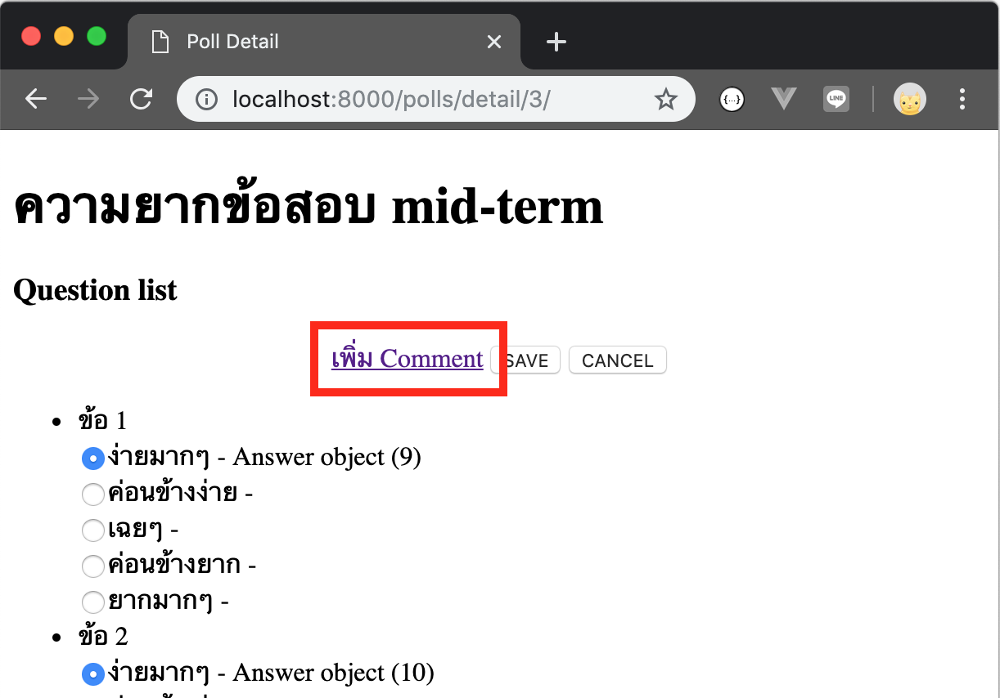
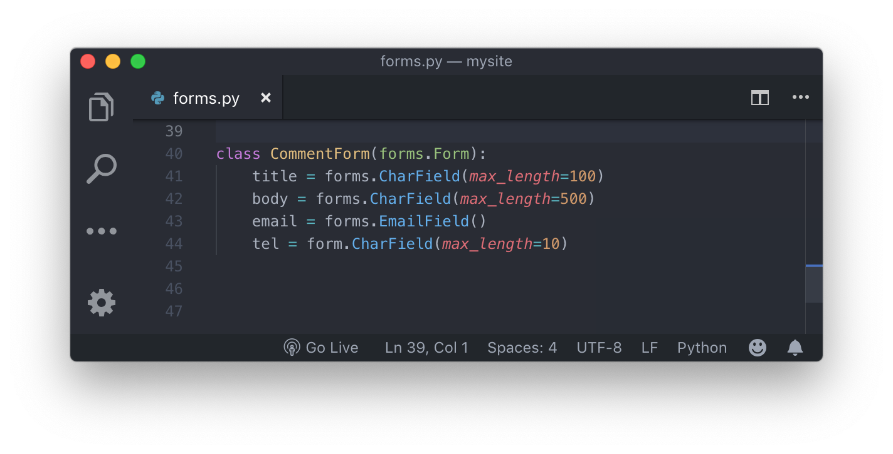
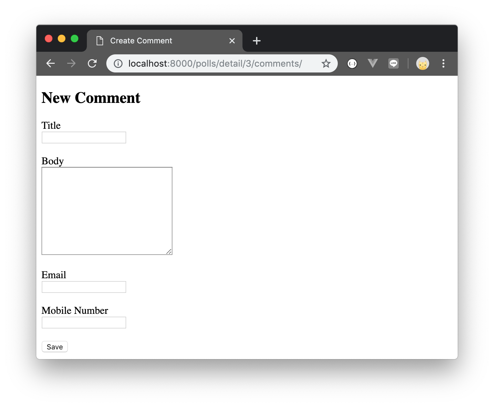
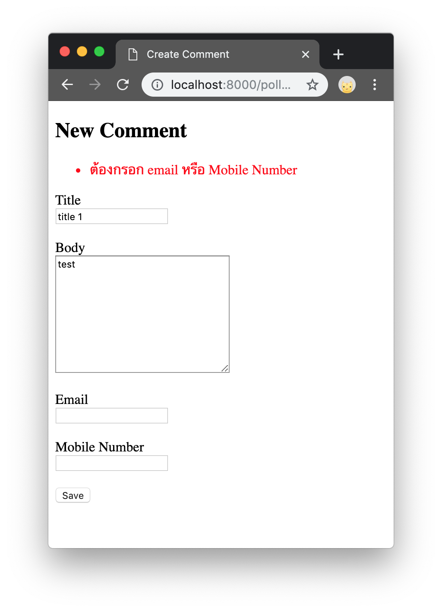
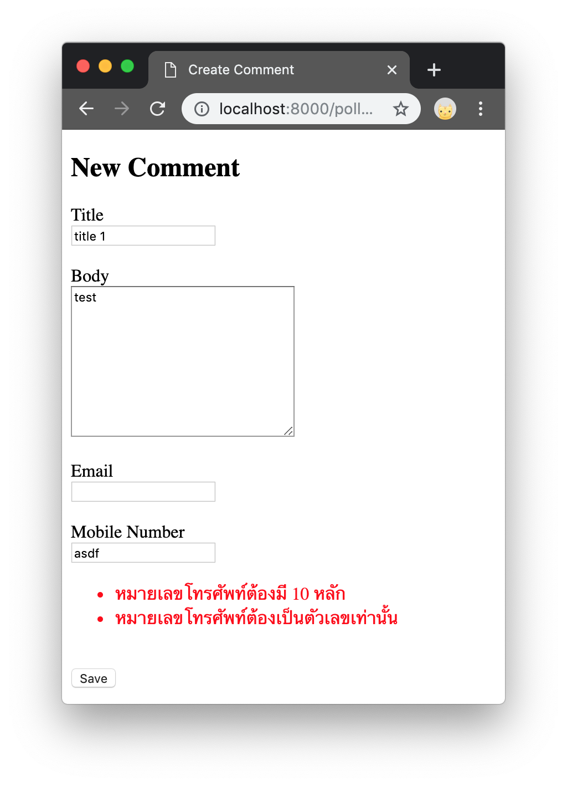
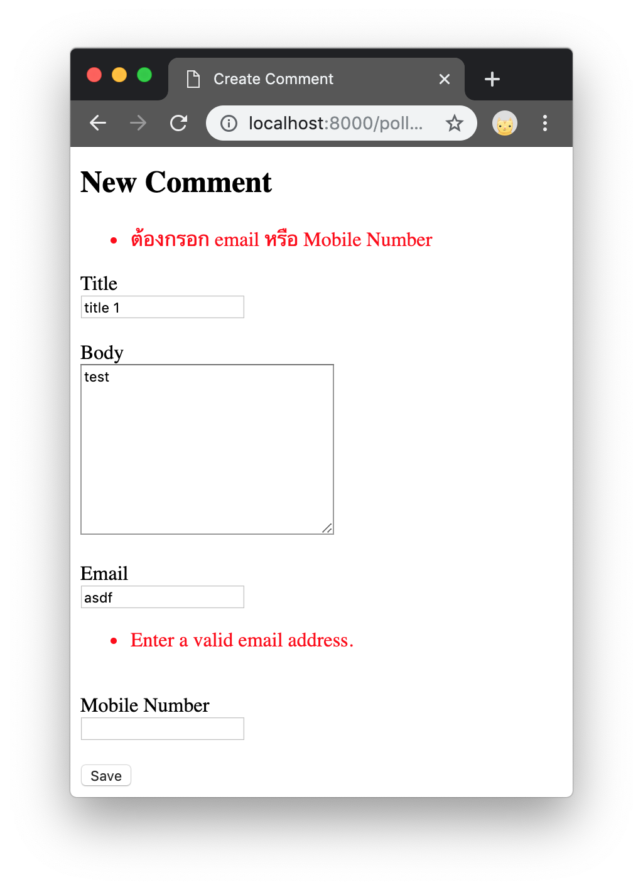

Django Week 3 Exercise
ก่อนทำโจทย์ควรดูคลิป https://youtu.be/EiKharYVtQQ
โจทย์
สร้าง Form สำหรับสร้าง Comment ของ Poll โดยมีขั้นตอนดังนี้
-
สร้างตาราง Comment ในฐานข้อมูล (MySQL Database)
โดยมี 4 field คือ- title: CharField(max_length=100)
- body: TextField()
- email: EmailField()
- tel: CharField(max_length=10)
-
ในหน้า Poll Detail (เช่น http://localhost:8000/polls/detail/3/)
เพิ่ม link ไปที่หน้าใหม่
 -
ใน
polls/forms.pyเพิ่ม  -
เมื่อกดที่ link ในข้อ 2 แล้วจะต้องเปิดหน้าใหม่ไปที่ http://localhost:8000/polls/detail/3/create-comments/
**ในขั้นตอนนี้มี 3 ขั้นตอนย่อย
โดยในหน้า http://localhost:8000/polls/detail/3/create-comments/ จะต้องแสดงผลดังรูป
 -
ให้ validate ข้อมูลดังนี้
- title: ตัวอักษรขนาดไม่เกิน 100 ตัวอักษร
- body: ตัวอักษรขนาดไม่เกิน 500 ตัวอักษร
- email: ต้องเป็น Email format
- tel: ต้องเป็นรูปแบบโทรศัพท์มือถือ (ตัวเลข 10 ตัว)
- ต้องกรอก email หรือ tel อย่างใดอย่างหนึ่ง
-
ถ้า ไม่ผ่านการ validation ให้ขึ้นข้อความ error สีแดง เช่น
   - ถ้า ผ่านการ validation แล้วให้บันทึกลง database